MUSC293 Notes
More Forms Link to heading
TSPDT Link to heading
- TSDT -> TSPDT, P stands for Chromatic Pre-Dominant
- Chromatic Pre-Dominant = Accidental (chromatic) + comes before V chords (Pre-Dominant)
- This also includes Tonicization (V/V and vii/V)
- Prolongation can also be appled on P chord
Neapolitan Chord Link to heading
Description Link to heading
- P chord category: Chromatic Pre-Dominant
- Servces to prepare and lead to the dominant chord (goes before applied chord)
- root note is lowered
- first inversion
- major chord
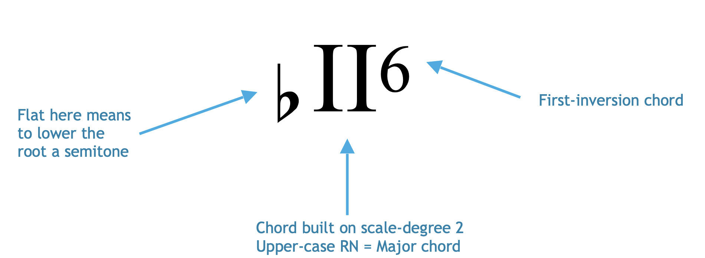
{width=75%}
Carefull that… Link to heading
- To find a Neapolitans: look for flat ^2
- Very easy to create parallel
- Subdominant can be missing (S replaced by P)
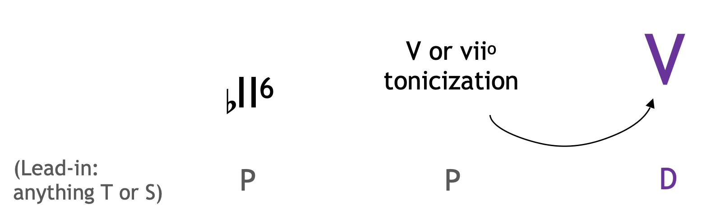
{width=50%}Our Rules for the voice leading Link to heading
- Must in first inversion (tho the analysis might appear in root position)
- ^2 resolve down to ^7
- Double the 3rd of the chord
Augmented 6th chord Link to heading
- P-function chord
- chromatic voices to ^5 in two voices
- these two notes are augmented 6th apart
- they are voice leading, defined by their relation to V
- The A6 resolution expands outward. (^b6 to ^5 and ^#4 to ^5)
- Three type of augmented 6th chord
- Italian 6th
- French 6th
- German 6th
- Labelling: no inversion or Romain numeral
Build a augmented 6th chord Link to heading
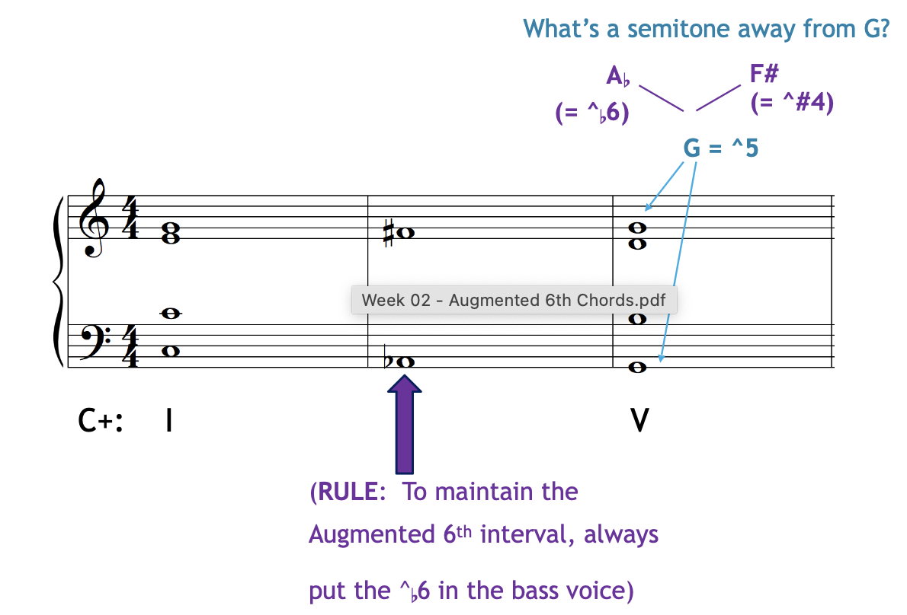
{width=75%}- finding two scale degree 5 (root note of V) with chromatic note away
- Note that the chromatic that goes down must be in the bass
- The lead is in a < shape
- add ^1 for stability
- add the appropriate extra note (Think about the geographic notation where Italian 1 on the bottom, France 2 in the middle and German 3 on top ) (as long as it is semi-tone away, it is good):
- ^1 for Italian (another tonic)
- ^2 for french (major second)
- ^b3 for German (minor third)
- Note that this will create parallel 5th, so use cadential 64 to avoid parallel.
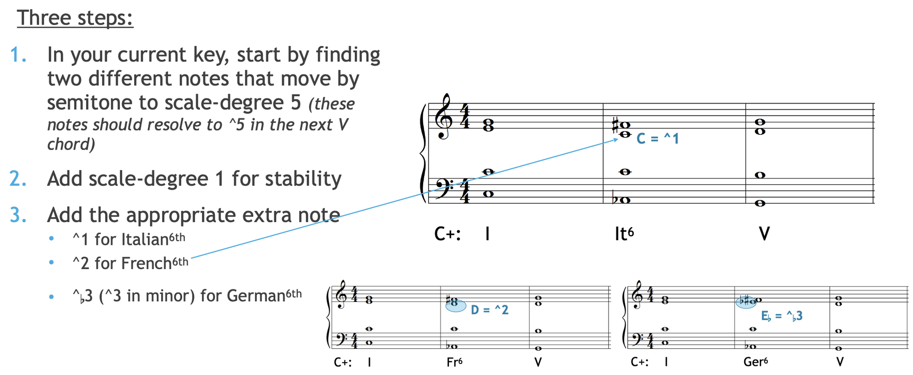
{width=75%}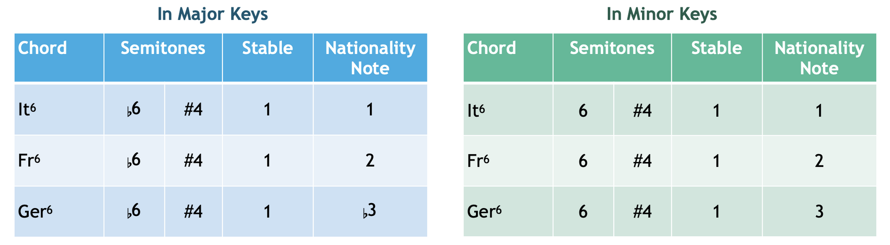
{width=75%}Other non P-chord type chromatic chord Link to heading
- Other type of chord that include chromatic tone that is not a P type of chord
- Their harmony function stays the same as the non-chromatic version of their counterpart.
- non-P chromatic chord type during the Romantic-era music:
- Altered Dominants
- Secondary Mixture
Altered Dominants Link to heading
- Can be used in anywhere the V would go
- Variant of V chord which the 5th of the chord (chordal fifth) is either raised or lowered by semi-tone
- Same rule apply to the minot version
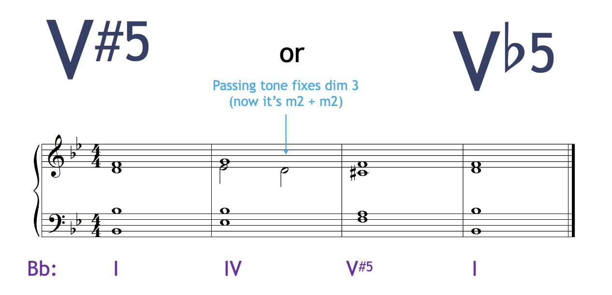
{width=75%}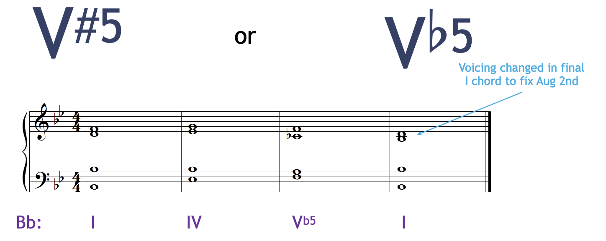
{width=75%}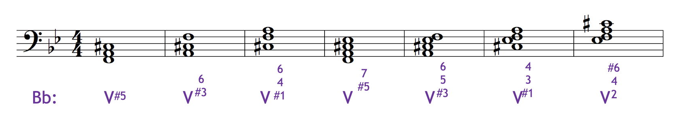
Secondary Mixture Link to heading
- When the quality is changed but the root of the chord remains the same
- This is different from Mode mixture where Mode mixture borrows chords from their neighbor keys.
- Mode Mixture: change the chord by borrowing accidentals from the parallel key. Usually involve raising or lowering the ^3, ^6, ^7 tone
- Change of the quality based on the root of the chord
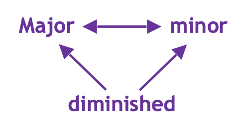
{width=50%}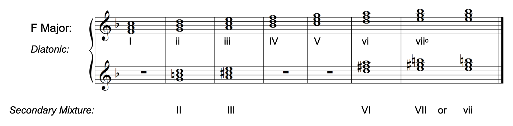
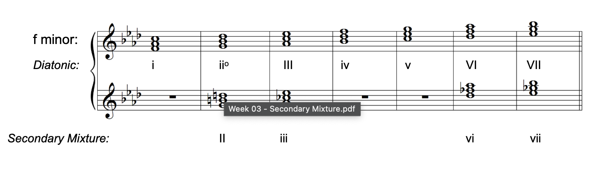
Build a secondary chord mixture Link to heading
- Choose a chord from the original diatonic scale
- Keep the root the same
- Depending on the original chord quality:
- If Minor: raise the 3rd by semitone -> Major chord
- If Major: lower the 3rd by semitone -> Minor chord
- If Diminished: Do one of the Minor/Major Step above + raising the ^5
Exrta notes on Secondary Mixture Link to heading
Note that secondary mixture doesn’t always work, a simple way is just to treat them like non-chord tone (contrapuntal chords)
- watch out for awkard melodic intervals (dim3/aug2) to add fixes
- If the secondary mixture duplicates the pre-existing chord type, then they aren’t secondary mixture
- I, IV, V in Major and i, iv, v in minor will produce the same result as Mode mixture chords.
- A newly-introduced Major chord whose root moves by P5th down (or P4th up) to the next chord will be a tonicization and therefore cannot be a SM chord
- e.g. watch out of I ii V, secondary Mixture on ii become II
- Things become I II V, but II is actually the tonicization of the V, this is understood as a tonicization rather than secondary mixture *exception if the chord that follows them is diminished • It’s extremely rare for tonicizations to be SM since this eliminates the raised ^7 in the temporary key, which is the note that makes us actually hear it as a tonicization (Secondary Mixture can rarely be tonicized)
- The precedence of secondary mixture come last.
Enharmony Mudulation Link to heading
- Modulation through respelling the chord enharmonically
- Enharmony equivalent: sounds identical but is spelled differently
- Exploit the structure of viio7: The interval between each notes are equal, hence makes it a good canditate for enharmonic modulation
- Exploit aural similarity between Ger^6^ and V^7^
- Creates modulation between distantly-related keys
- Common enhamony mudulation will be using chord of:
- vii^o7^
- Ger^6th^
- V^7^ *Note that the voice leading follows on the newly spelled chord
vii^o7^ to any Modulated vii^o7^ inversion Link to heading
- Symmetric structure: same interval in between chords
- The new key can either in major or minor
*Note that vii^o7^ has ^7 natural
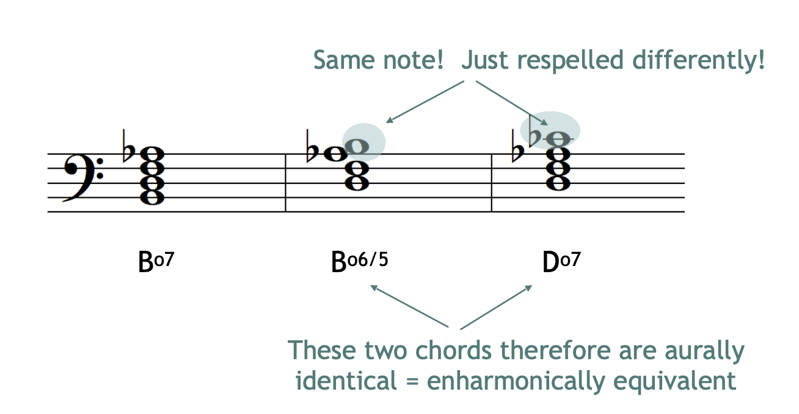
- Any Note within vii^o7^ can be choosen as the new root of vii^o7^
- The new vii^o7^ will be respelled based on the choosen root
- If the new root is the chordal 7th, this ^4 note need to be repelled to its relative notes (Ab -> G#)
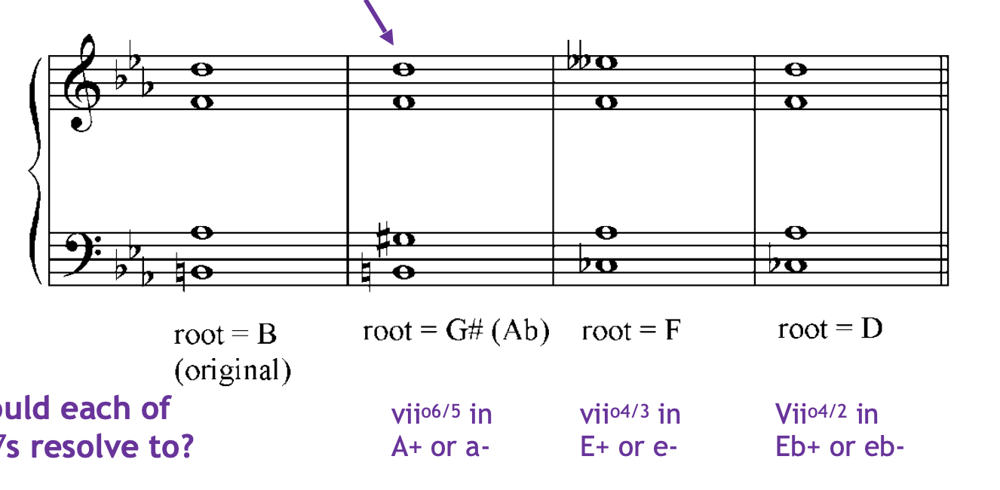
Choose any of enhamonic equivalent chord (2-4 measure) to modulate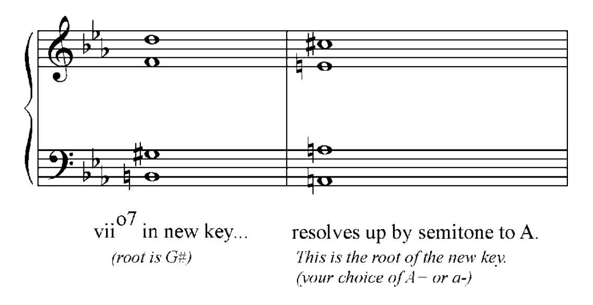
- The new vii^o7^ can resolve up by minor second to its new key.
Enharmonic between V^7^ and Ger^6th^ Link to heading
- The root of the Ger^6th^ (usually ^b6) is the root of V in new key
- aka The root of the V is the ^b6 in Ger^6th^
- Count the new key from this new V (down by 5)
- The new key can either in major or minor
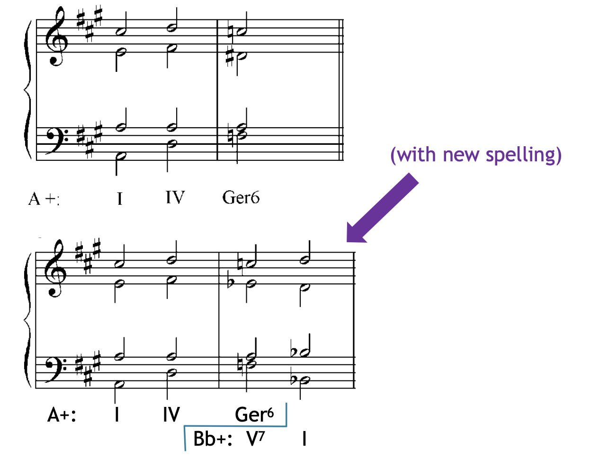
Common Tone Relationships Link to heading
-
Mostly seens in prolongations
-
Contrapuntal/elaborating chord winthin larger prolongation
-
Inversion does not matter
-
The CT chord can comes from the chord before the chord after
-
No traditional Roman numeral
-
There are three different type of common-tone:
- CT fully/half Diminished 7^th^
- Fully: all m3^rd^
- Half: m3, m3, M3 from root
- CT Mm7^th^ (dominant 7th)
- CT Aug7^th^
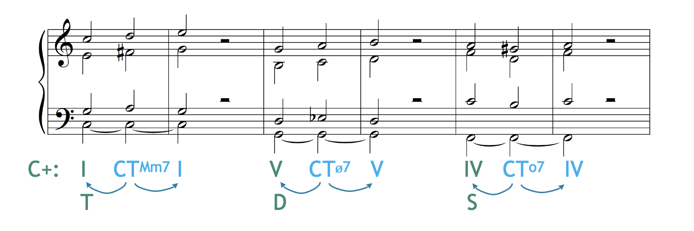
- CT fully/half Diminished 7^th^
-
Steps to construct a ommon tone
- Keep the root of GC as common tone (This is the 7th of the common-tone chord)
- Stack thirds below the common tone and add the accidental to form the quality (dim/Mm/Aug) of the chord. Do not modify the CT 7^th^
- Rearrange the chord to create smooth motion in each voice (max the leap of third)
-
Note that:
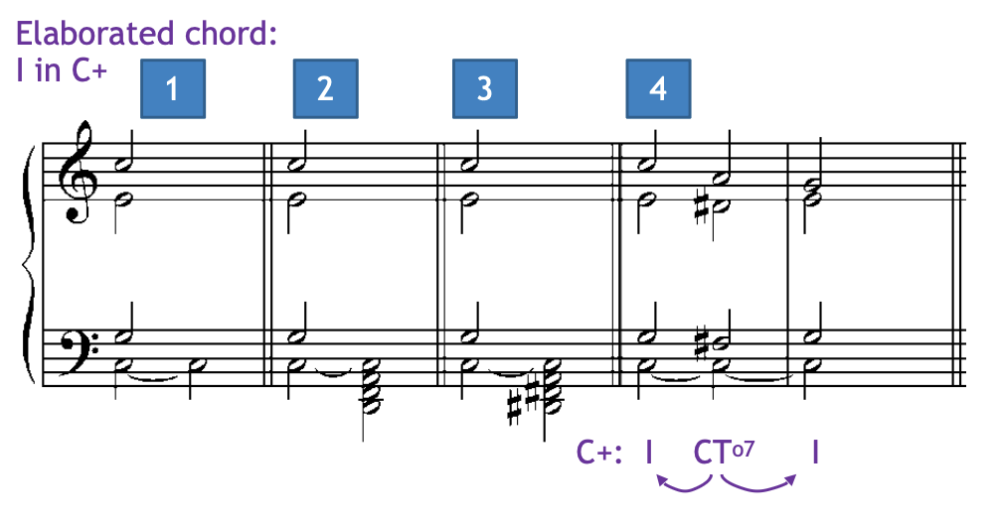
-
The CT does not have to be in the bass
-
CT 7th does not need to resolve down by step (because its contrapuntal chord)
-
CT note can be repeated without a tie
-
The root of the goal chord will always stays the same (no matter where this chord is located)
-
Some CT note can form an already existing chord
Jazz Harmony Link to heading
Terms Link to heading
- Extensions: Added dissonance chords 9th , 11th , 13th
- two-five-one: tonicization, mostly refer to ii-V-I
- m7 followed by Mm7 (Dom7), the ii^7^ - V^7^ combination
- m7b5 (= Ø7) followed by Mm7 (Dom7), the ii^Ø7^ to V^7^ combination
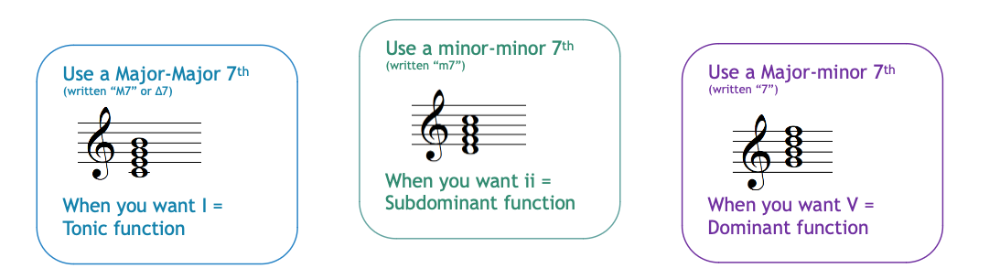
- Very common to vary the Jazz chord given on the lead sheet
- “Extensions”
- chord with 6/7th, SUS chord
- Altered dominant
Tritone substitution Link to heading
- This can replace the original fifth
- Tritone substitution is to count the Mm chord that is tritone away
- Usually uses the tritone that can go down by 5th to the tonic
| V | I |
|---|---|
| G7 | CMaj7 |
| Tritone: Db7 (Db7 is common because 5th down) | CMaj7 |
| Tritone: C#7 | CMaj7 |
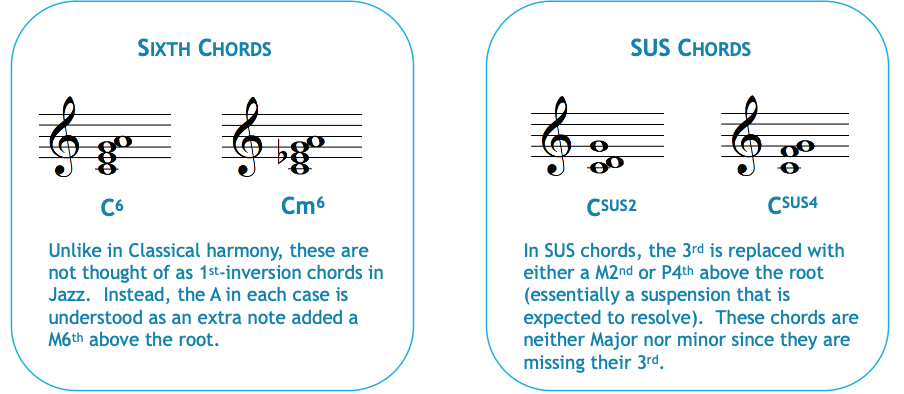
Sonata Form Expositions Link to heading
- In short
- Two Keys
- Two Things
- Subordinate key:
- in Major = key of V • in minor = relative major key
Overview Link to heading
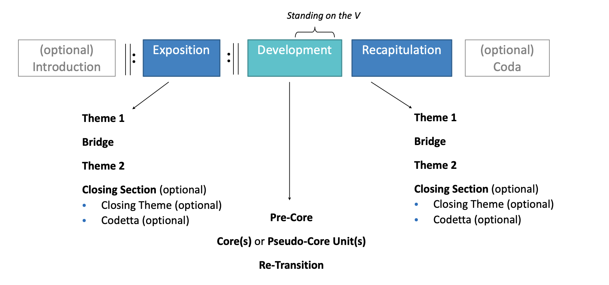
Exposition Link to heading
- Theme1:
- occurs fully in home key
- distinct melody
- tight-knit -> standard phrase model
- Moderate or fast tempo
- Could have more than one phrases
- Bridge (modulating transition)
- Destabilize the home key and modulate to the subordinate key
- thematic continuation
- end in HC in new key
- Theme2
- contrast with theme 1
- Slower, more lyrical than theme 1
- In subordinate key
- End with PAC
- Closing Section
- Optional section
- new material after theme 2
- Two possible theme:
- Closing Theme
- Final thematic material before exposition
- appear to be new thematic (fragmentation)
- contain full phrase, TSDTs and cadence
- Codetta
- Only fragmentation/ or repetitive of motives
- Consist of harmony prolongation (Post-CE)
- not a standalone phrase and does not have a cadence
- Closing Theme
Recapitulation (Similar to Exposition) Link to heading
Bring back the exposition theme material | Similar to exposition | remain in the home key | may eliminate portion of the exposition and replace with new material | Does not transition into new material - retain closing theme or into codetta
- Theme 1
- Resolve the series of V brought by development section
- Often Undergo Structural changes
- deletion of theme restatements
- added model+sequence pattern
- no home-key cadence
- Bridge
- Does not modulate
- tonality unstable via chromatic chord
- often include tonicization of IV (give a sence of TSD)
- End in V and into the theme2 (with a series of V at the end)
- Compress the original bridge material
- Further develop motives
- Theme2
- Occurs in home key
- loose organization
- expanded from exposition
- end with strong cadence in the home key
- Closing Section
- Occur independently of a “transition” function
- May function as a transition to coda
- Codettas
- replaced by coda or extended closing section
- or re-worked to provide more harmony rather than prolongation
Development Link to heading
Technical Details Link to heading
Motivic Elements Link to heading
- re-uses previous themes
- Multiple themes may be developed
- Emphasis on sequences
- Sequence = repetition with transposition
- Loosest formal organization of movement
- No standard phrase
Harmonic Structure Link to heading
- Avoids authentic cadences in the home key
- Has a series of modulations, often to “remote” keys
- based on modal contrast with 2 nd theme
- end is usually V of home key
Techniques Link to heading
- Fragmentation and re-combination
- Variation
- Different things might happen
- Re-orchestration
- Melodies might be moved to other lines
- More rarely, introduction of new motives
- Might have new materials
Sections Link to heading
Pre-cores Link to heading
- Begins with tonic of subordinate key (from end of exposition) • Introduction-like character; more relaxed “feel” than core; features softer dynamics, less rhythmic activity, transitional function • Motivically, often derived from theme 1 or closing theme of EXP • Commonly loose-knit (structured around loose versions of standard phrase models)
Core or Pseudo-core Link to heading
Core Link to heading
- Core = model + sequence unit (a model + sequence of model)
- model is commonly 4-8 measures long (often a full phrase)
- transpositional pattern may change throughout core
- features fragmentation
- Possible to have more than one core if motivic material changes
- “Sturm und Drang” quality
- Grove Music Online: “artistic aims: to frighten, to stun, to overcome with emotion
- Minor key • Dynamic extremes & contrast; more use of sfz, crescendo • Counterpoint rather than homophony • Chromaticism • Dramatic contrast • Agitato figures (esp. bass 8ves)
- Core units often end on V (=HC) in their key, or another type of unstable cadence
Pseudo-core Link to heading
- No model + sequence technique
- Still has character of development (eg. Sturm und Drang, etc.)
- May have improvisatory style
- Common in Haydn’s development sections, which generally do not use the core/pre-core procedure
Re-Transition Link to heading
• Leads into (and includes) the final standing-on-the-V of the development section • Leads back to home key • Commonly incorporates motivic material from theme 1 • D-prolongation
Framing Sections Link to heading
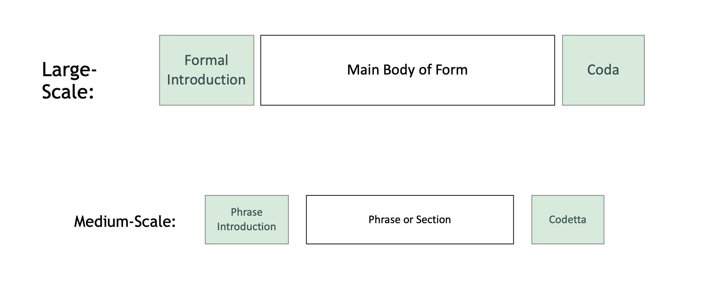
The Formal Introduction and Coda are Standalone Sections- The middle part can be anything large:
- Rondo: ABACABA
- Binary or Ternary: AB, ABA, ABA'
- Sonata
- Or anything small:
- Phrase
- Short as a single bar in the phrase introduction
- etc
Generally, Intro and Coda Link to heading
• Slow in tempo • Often has a different tempo marking (text or metronome marking) • “Solemn, serious tone” • Least predictable of all large-scale formal units (loose-knit)
Features Link to heading
Formal Introduction Link to heading
- Sense of anticipation created by:
- melodic, rhythmic, textural, and dynamic discontinuity
- instability in harmonic progressions
- minor mode
- extensive chromaticism
- Has qualities associated with French overtures
- fanfare gestures
- tutti textures
- dotted rhythms
- initial forte dynamic
- Usually contain their own theme(s)
- Do not generally modulate, although prominent tonicizations do occur
- Often end with HC of home key or cadential elision leading into theme 1
- Distinction: Very short units are normally phrase introductions or codettas, whereas longer units tend to be formal introduction sections or codas
- Short units often involve harmonic prolongation, little harmonic profile (i.e. no distinct, memorable melody)
- Longer units may themselves have shorter ones embedded within
Codas Link to heading
- Distinct from other sections such as the recapitulation
- Is present to “express the temporal quality of “after-the-end” ”
- Remains in home key, although may use tonicizations or chromatic sequences
- In sonatas, begins after the exposition material has all been re-stated (although beginning often obscured). In rondos, begins after the end of the final A section.
- “the composer can make up for events or procedures that were not fully treated in the main body of the movement”
- recall main theme ideas
- present exposition material omitted from the recap
- re-state ideas from the development
- shape the overall dynamic line
- complete a process (eg. wind down from a climax)
Codas vs Codettas Link to heading
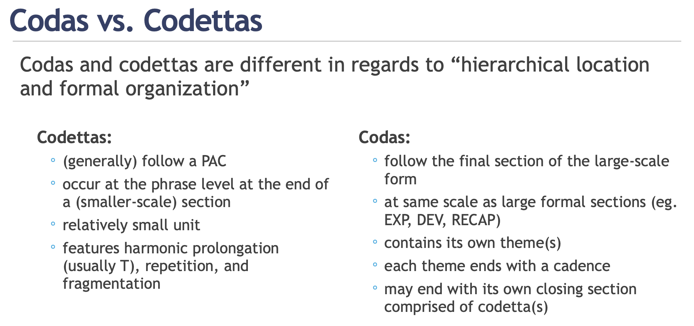
- Codettas: Short and repeated prolongation
- no phrase
- no cadence
- no TSDT, or mini TSDT prolongation
- Codas: Long and contain its own theme, may include codettas
- is a phrase
- has cadence
- Has full TSDT
Rondo Link to heading
- Rondo Form: Features motive A that returns repeatedly throughout the piece
- 5 parts
- ABACA, B and C are contrasting material
- ABA(B/C)A
- 7 parts
- ABACA(B/D)A
- Sonata-Rondo
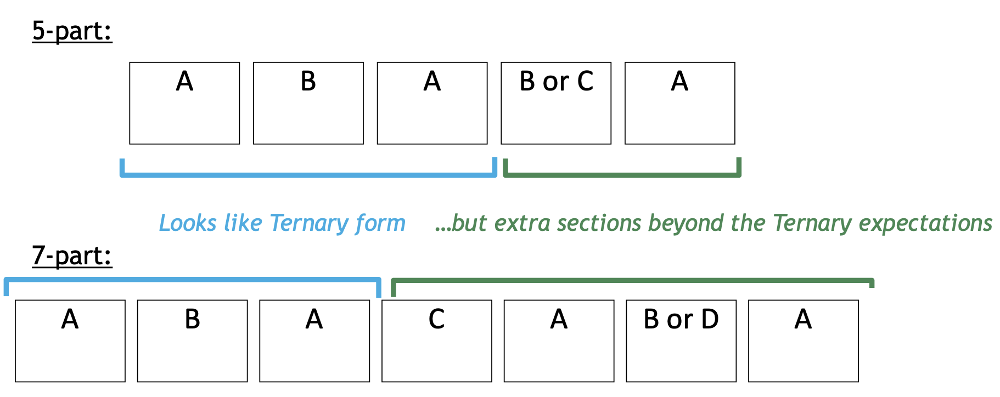
- 5 parts
General Features of Rondo Link to heading
- Main thematic idea alternates repeatedly with contrasting idea
- Similar to ternary form; can be thought of as an expansion of this form
- alternation of one expository, returning section with contrasting material
- often palindromic structure
- emphasizes contrast!
- Often used as final movement in symphonies, sonatas, concerti, etc.
Large-scale Feature Link to heading
- Can involve composite structure (where the A, B, C section itself may contain Binary or Ternary)
- One section to another via a transition section
- Coda can be added at the end of the sections:
- ABABA(Coda)
- ABACADA(Coda)
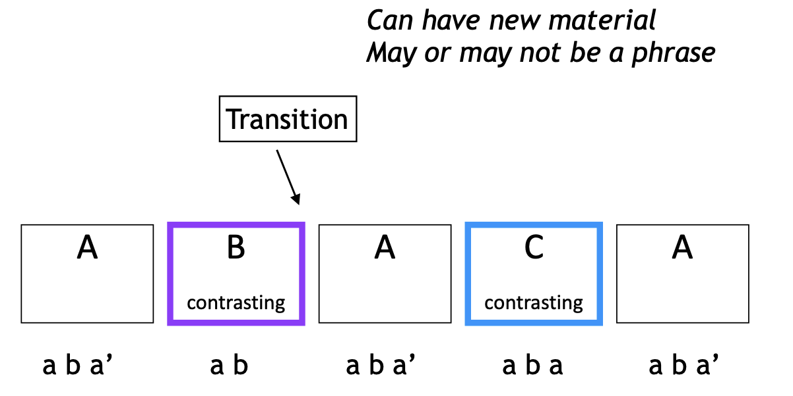
{width=75%}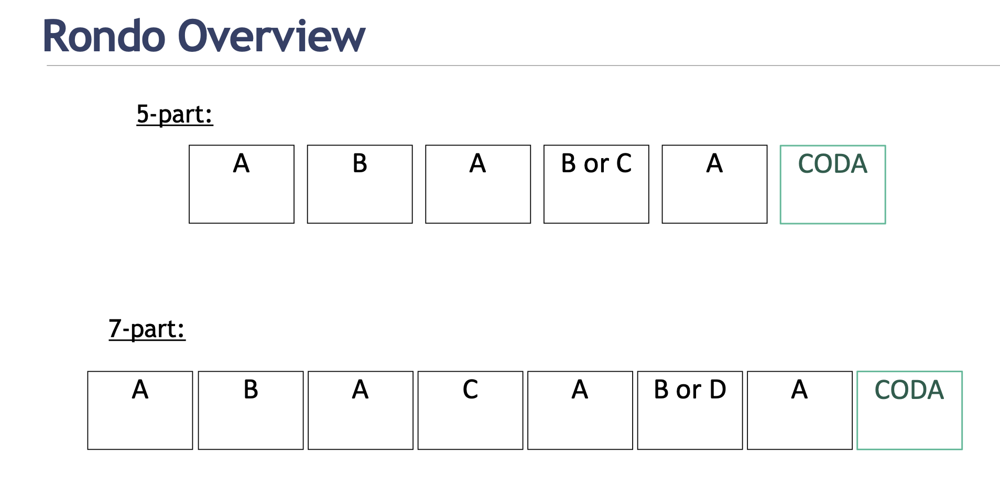
{width=75%}
Sections Link to heading
Section A Link to heading
- Tight-knit phrase forms
- Occurs in the home key
- Sometimes embellished or truncated, but usually no significant modification to the underlying harmony occurs
Section B & C & D Link to heading
- Feature significant contrast with A, which may include…
- motivic design
- tonality
- modality
- rhythm
- texture/orchestration
- Not in the home key
- Usually begin immediately in new key (i.e. uses direct modulation)
- Are also tight-knit
- May end with V of home key to smoothly lead back to A tonality
Sonata-Rondo Link to heading
Sonata-Rondo includes the elements of both Sonata and Rondo
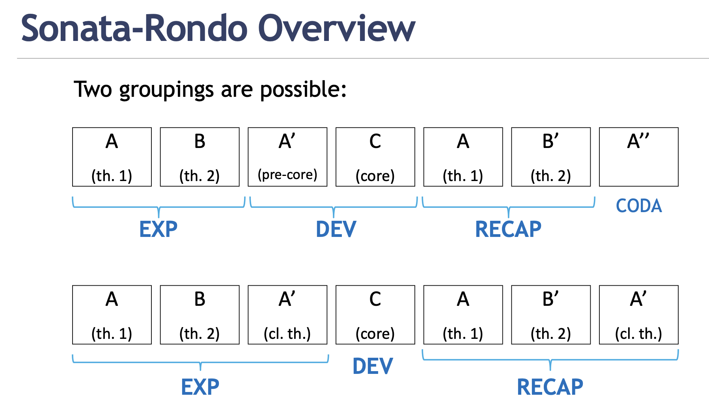
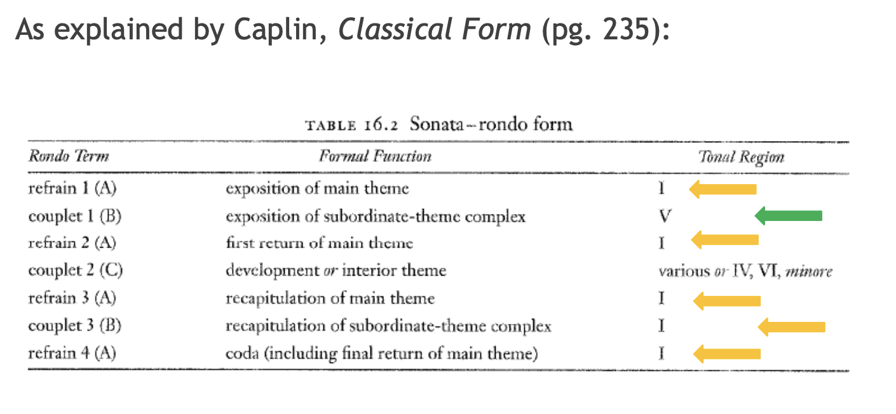
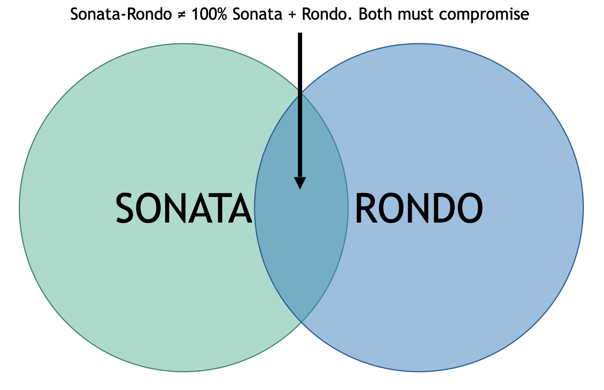
Comparing Rondo and Sonata-Rondo form Link to heading
| Regular Rondo | Sonata-Rondo | |
|---|---|---|
| A Sections | A returns exactly or with only minor variation (same criteria as Ternary form) | Repetition of the A section at the end of the exposition is often varied and incorporated into the closing theme material |
| B sections | Repetitions of B are normally in the same key | B can appear in two different keys: in the subordinate key the first time through, and the home key the second time through (same as Sonata) |
| C sections | C is usually (new) contrasting thematic material | Thematic material from A and B return in C (usually fragmented) |
Sections Link to heading
Section A Link to heading
- Return of A can be significantly varied in sonata-rondo (for example, the A’ is commonly an abridged version of A)
- Can use a variety of phrase forms (i.e. need not be tight-knit)
Section B Link to heading
- Features the theme 2 and sometimes a transition
- Occurs in the subordinate key (i.e. V in Major, III in minor) the first time, and the home key the second time
- May lack cadential closure
Section C Link to heading
- Developmental function, and therefore likely to recycle themes from A and B sections
- May modulate extensively
- Typically acts like a developmental “core” section, with significant fragmentation, sequencing, and modulation